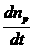
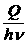
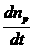
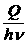
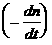
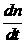
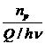
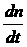
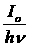

{kind=link}
{kind=link}
{kind=link}
{kind=link}
{kind=link}
 =  = g = g  . (5)
=  = g = g  . (5)Фотохимией называется раздел физической химии, изучающий закономерности протекания химических процессов, обусловленных действием света. Основной процесс, проходящий под действием света, - фотодиссоциация, или возбуждение молекул.
Гротгус в России (1817) и Дрейпер в США (1839) независимо друг от друга сформулировали закон, согласно которому химически активны лишь те лучи, которые поглощаются реакционной смесью. Этот закон очевиден и не имеет исключений. Обратное утверждение, что лучи, которые поглощаются при реакции, являются фотохимически активными, не верно, так как не все они вызывают фотохимическую реакцию. Закон Гротгуса – Дрейпера непосредственно связывает химическое действие света с его поглощением веществом.
Ламберт (1760) установил, что ослабление интенсивности dI света, прошедшего через слой толщиной dl, прямо пропорционально толщине слоя и интенсивности падающего света I, а Бер (1853) показал, что поглощение тонким слоем прямо пропорционально числу частиц (молекул) или их концентрации в слое. Объединенный закон Ламберта – Бера можно записать в форме
I = Ioe – knl , (1)
Io- интенсивность светового потока до прохождения поглощающего слоя;
I - то же после поглощения в слое толщиной l;
n- число поглощающих свет молекул в 1 см3;
k- множитель пропорциональности, называемый молекулярным коэффициентом поглощения.
Вант-Гофф показал (1904), что количество химически измененного вещества прямо пропорционально количеству поглощенной веществом световой энергии. Количество энергии Q, поглощенной в единицу времени, может быть найдено из закона Ламберта – Бера:
Q = Io - I = Io (1 - e – knl ) . (2)
Тогда скорость фотохимической реакции  пропорциональна количеству энергии, поглощенной веществом в единицу времени:
-  = K Io (1 - e – knl) , (3)
К - множитель пропорциональности.
Наиболее интересным и важным законом, позволившим разобраться в механизме фотохимических реакций, является закон фотохимической эквивалентности Штарка – Эйнштейна (1912), который гласит, что каждому поглощенному кванту излучения hnсоответствует одна измененная молекула. Закон Штарка – Эйнштейна – основной закон фотохимии.
Количество энергии, необходимое для фотопревращения одного моля вещества при данной длине волны, равно NAhn = 6,02×1023 hn и носит название эйнштейн. Числовое значение одного эйнштейна зависит от частоты колебаний. Например, 1 эйнштейн при длине волны 700 нм равен 170,7 кДж/моль, а при длине волны 200 нм равен 598,3 кДж/моль.
Число квантов, поглощенных в единицу времени, равно na = Q/hn. Следовательно, изменению под действием света должны подвергнуться np = Q/hn молекул.
Опыт показывает, что во многих случаях число фотохимически прореагировавших молекул не равно числу поглощенных квантов. Поэтому для характеристики фотохимических реакций было введено понятие квантового выхода g. Квантовым выходом называется отношение числа прореагировавших молекул к числу поглощенных квантов:
g = =  , (4)
где np - число прореагировавших молекул.
Скорость химической реакции
Подставив в уравнение (5) выражение (2) , получим
-  = g  (1 - e – knl) . (6)
Это наиболее общее выражение для скорости фотохимической реакции, объединяющее все законы фотохимии и дающее теоретическую интерпретацию коэффициенту пропорциональности в уравнении (3).
Если толщина поглощающего слоя мала (knl << 1), то экспоненту в уравнении (6) можно разложить в ряд и ограничиться двумя первыми членами разложения:
v = - ![clip_image313[2]](http://spargalki.ru/images/stories/clip_image313%5B2%5D.gif "clip_image313[2]") = g (1 - 1 + knl) = g
= g (1 - 1 + knl) = g ![clip_image321[2]](http://spargalki.ru/images/stories/clip_image321%5B2%5D.gif "clip_image321[2]") knl ,
knl ,
v = (const × Io × kl) × c ,
то есть в данном случае фотохимическая реакция имеет первый порядок по реагенту. Если же толщина поглощающего слоя велика (knl >> 1), то весь свет поглощается и скорость реакции определяется только величиной Io, то есть реакция имеет нулевой порядок по реагенту
v = const × Io .
Особенностью фотохимической активации является ее селективность. Поглощенные кванты света возбуждают и тем самым приводят в активное состояние отдельную связь или группу атомов в данной молекуле. В этом большое преимущество активации молекул светом по сравнению с термической активацией.
Кинетика фотохимических реакций описывается обычными дифференциальными уравнениями, выражающими закон действующих масс. Единственное отличие от обычных реакций с термическим возбуждением состоит в том, что скорость первичных фотохимических процессов не зависит от концентрации исходного вещества, а определяется только интенсивностью света.
{kind=link}
{kind=link}
{kind=link}
{kind=link}
{kind=link}
{kind=link}